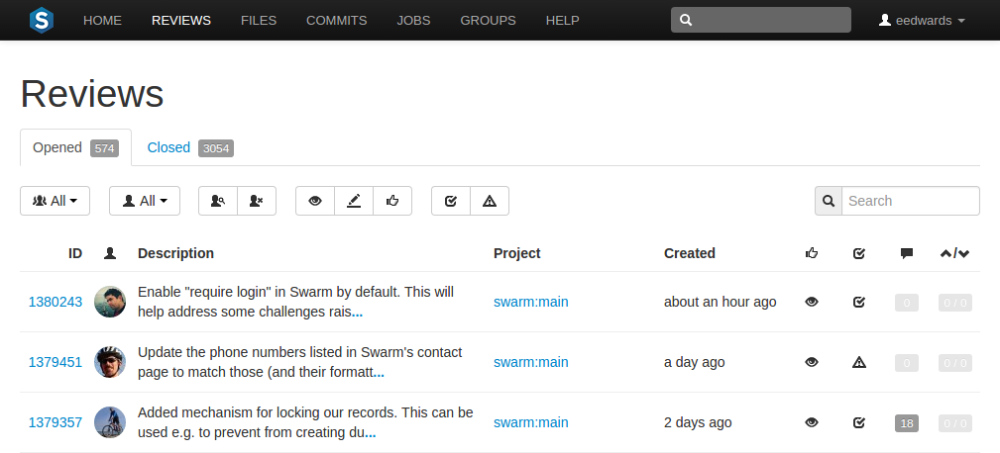
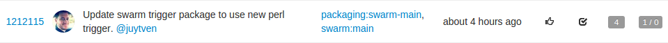
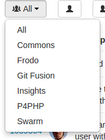
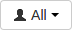
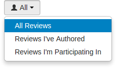
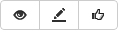
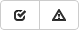
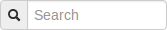
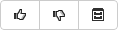

Review queues
Code review queues help you keep track of code reviews that:
-
Have been requested and are awaiting review
-
Are underway
-
Have been accepted, rejected, or archived
To see all available reviews, click the link in the main toolbar.
The Reviews page lists open reviews for all projects in the Helix Versioning Engine.

Opened reviews, those that have just begun, are being reviewed, or are awaiting further changes, are displayed on the tab. Closed reviews, those that have been completed successfully, have been rejected, or have been archived (where it might be unclear of their benefit), are displayed on the tab.
Each review queue entry displays the following information:

-
The review id
-
The avatar of the review's author
-
The review's description
-
The associated project's name and branch
-
When the review was created
-
An icon indicating the current review state
-
An icon indicating the test suite state
-
A
 counter for the number of open (non-archived) comments that are
associated with the review. Hover your mouse over the comment count
to display a tooltip showing the number of archived comments associated
with the review.
counter for the number of open (non-archived) comments that are
associated with the review. Hover your mouse over the comment count
to display a tooltip showing the number of archived comments associated
with the review.
-
An indicator showing the number of up votes and down votes
Note
Hover your mouse over any of the icons to see tooltips.
Projects and Groups have their own review queues that display reviews created by their members.
Filtering open reviews
The tab presents a list of all code reviews that have started, are being reviewed, are awaiting revisions, or need to be committed. The following filtering options are available for opened code reviews:
-
 : click the button and select a project from the drop-down menu.
When you are viewing a project-specific review queue, Swarm displays the project's list of branches in the drop-down menu, with the main branch appearing first and other branches afterwards. A main branch is typically identified by its name, such as main, mainline, master, trunk. The list of names can be configured; see Mainline branch identification for details.
-
 : a dropdown menu that lets you filter which reviews to display based on your involvement:
-
All Reviews: all reviews within the current project are displayed.
-
Reviews I've Authored: all reviews within the current project that you have authored are displayed.
-
Reviews I'm Participating In: All reviews within the current project that you have authored, or are a reviewer, are displayed.
When you select one of the available options, the list of options updates to match the currently selected filter, and the dropdown indicates the current filter: All, Author, or Participant.
-
-
or : displays reviews that have one or more reviewers, or reviews that have no reviewers.
-
 Review state: one of the following (left to right):
-
Needs review: the review's changes need to be reviewed. -
Needs revision: the review's changes have been reviews, but further revisions are required before the review can be accepted. -
Approved: the review's changes have been approved, and should be committed.
-
-
 Test status: one of the following:
-
Tests pass: when automated tests are enabled for the associated project, and the test suite execution succeeds, Swarm updates the review accordingly. -
Tests fail: similar to theTests passstate, except that the test suite execution has failed. Check with your test suite to determine why the tests failed.
-
-

Search term: where review descriptions match your search string.
Swarm updates the URL in your browser to reflect filtering options. This makes it easy to bookmark or share review queue URLs, and it maintains the current filtering if you click on a review and then use your browser's back button to return to the review queue.
Filtering closed reviews
The tab presents a list of all code reviews that have been approved and committed, rejected, or archived. The following filtering options are available for closed code reviews:
-
Project: click the button and select a project from the drop-down menu. -
 Review state: one of the following (left to right):
-
Approved: the review's changes have been approved, and should be committed. -
Rejected: the review's changes have been rejected. -
Archived: the review's changes have been put aside.
-
-
Test status: one of the following:
-
Tests pass: when automated tests are enabled for the associated project, only reviews where the tests have passed are displayed. -
Tests fail: similar to theTests passstate, except that only reviews where the tests have failed are displayed.
-
-
Search term: where review descriptions match your search string.
Swarm updates the URL in your browser to reflect filtering options. This makes it easy to bookmark or share review queue URLs, and it maintains the current filtering if you click on a review and then use your browser's back button to return to the review queue.